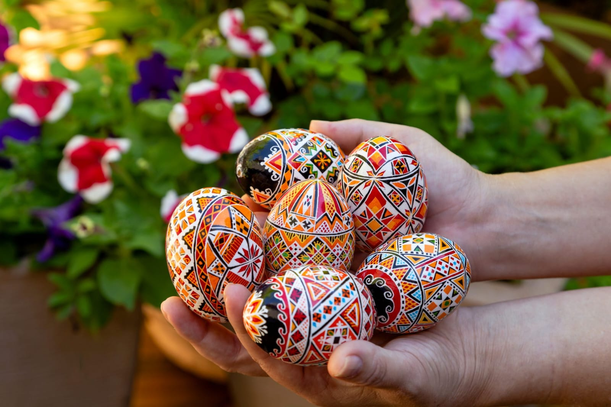
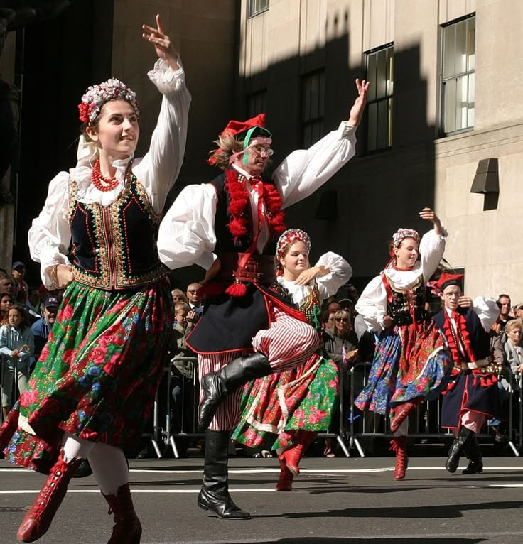

🗓️ País de origem, quando e por que vieram
Os ucranianos vieram da Ucrânia, principalmente da região da Galícia. A imigração começou em 1891, motivada pela pobreza, falta de terras e pela busca por uma vida melhor. O governo brasileiro incentivou a vinda de imigrantes para desenvolver a agricultura no Paraná.
📍 Onde se estabeleceram e contribuição para o Paraná
Eles se instalaram em cidades marcantes do estado:
Contribuíram significativamente para o crescimento da agricultura, criaram colônias rurais e enriqueceram a cultura paranaense.
🎨 Costumes, tradições e culinária típica
Os ucranianos preservaram suas festas religiosas, danças, músicas, roupas típicas e a tradição da pêssanka (ovos decorados). Na culinária, destacam-se pratos tradicionais como o pierogi (varenyky), borsch, holubtsi e a kovbasa.
O Paraná abriga a maior comunidade de descendentes de ucranianos do Brasil. A cidade de Prudentópolis é conhecida mundialmente no país como a Capital da Cultura Ucraniana.